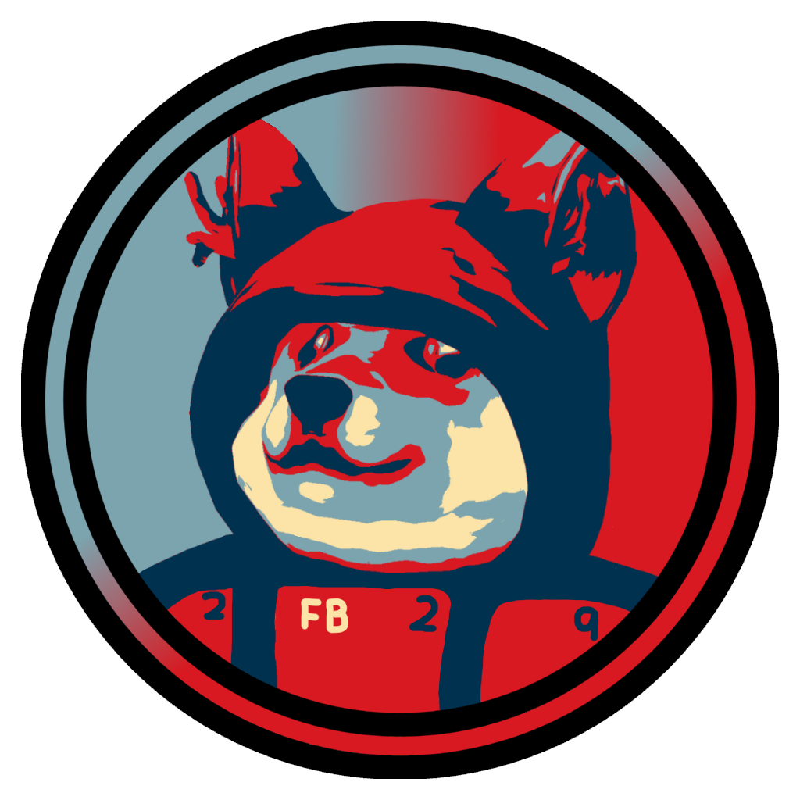

Welcome to my website!
I don't do much here, but thanks for stopping by!

My name is Fireblade, as you can probably tell by my username. I script a lot of the time on a program called Roblox Studio. It's fun, you should really try it out!. I make games sometimes but most of them end up going nowhere and are prototypes. Other than scripting with Roblox Studio, I like to code using HTML and CSS sometimes, like making a Stylus theme for a website. I am a beginner at Python, really good with Lua / Luau, and Intermediate with HTML and Javascript. Other than that, theres really nothing else to say. Thanks for coming to my website!
QNA
- Q: What do you do on ROBLOX?
- A: Most of the time I play games, but when i'm not, i'm probably scripting something / making a plugin
- Q: What are your socials?
- A: I have quite a lot, but here are the ones i'm mainly active on:
- YouTube
- Twitter
- Roblox
- GitHub
- Q: What plugins have you made?
- A: A LOT. Here are some of the most popular ones I have made.
- Character Loader
- UGC Camera Editor
- Advanced Studio
- Advanced Terrain
- To see all my plugins, go here
- Q: What do you like to do in your free time?
- A: Depends. Although recently I have been finding undocumented roblox endpoints, which is really fun to do for some reason.
- Q: What are your favorite games?
- A: I have a lot, however here are a few:
- Roblox
- Minecraft
- Hydroneer
- Gang Beasts
That's pretty much it for now. I will probably add more to this website later, if there even is a later.